Visualization with ggplot2
Last updated on 2026-09-08 | Edit this page
Overview
Questions
- How do I create charts in R that look better than SPSS Chart Builder output?
- What is the ggplot2 “grammar of graphics” approach?
- How do I customize colors, labels, and themes?
Objectives
- Build bar charts, histograms, scatterplots, and line charts with ggplot2
- Customize plots with labels, colors, and themes for publication quality
- Compare ggplot2 output with SPSS Chart Builder equivalents
- Create faceted plots to compare groups
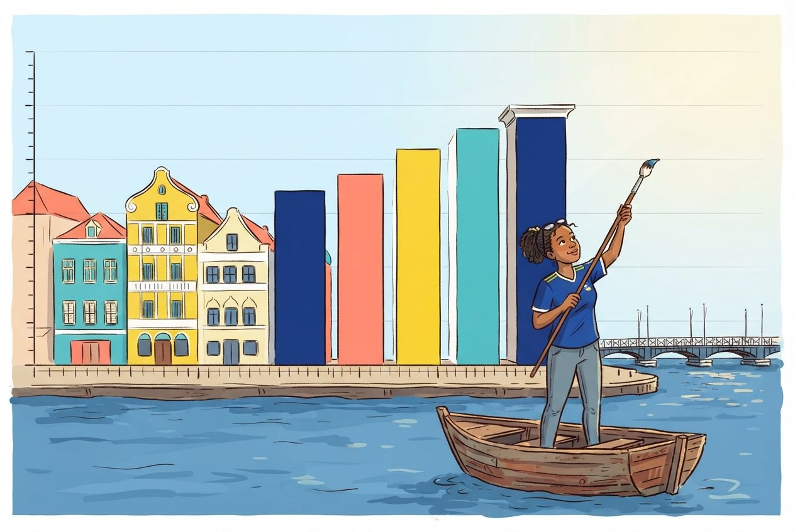
The grammar of graphics
In SPSS you create charts through the Chart Builder dialog: you drag variables onto axes, pick a chart type, and click OK. The result is a finished chart, but customizing it requires clicking through many menus.
ggplot2 takes a fundamentally different approach called the grammar of graphics. Instead of picking a finished chart type, you build a plot layer by layer, like constructing a sentence:
- Data, what data frame are you plotting?
-
Aesthetics (
aes()), which variables map to the x-axis, y-axis, colour, size? -
Geometry (
geom_*()), what visual marks represent the data: bars, points, lines? -
Labels (
labs()), what titles and axis labels should appear? -
Theme (
theme_*()), what overall style should the plot have?
You combine these layers with the + operator. First,
load our packages and both datasets:
R
library(tidyverse)
squad <- read_csv("data/blue_wave_squad.csv") |>
mutate(
island = if_else(str_starts(team_code, "CUW"), "Curaçao", "Aruba"),
gender = if_else(str_ends(team_code, "M"), "Men", "Women"),
home_code = if_else(str_starts(team_code, "CUW"), "CUW", "ABW"),
region = case_when(
club_country == "X" ~ "Unknown",
club_country == home_code ~ "Home island",
club_country == "NLD" ~ "Netherlands",
club_country == "USA" ~ "North America",
club_country %in% c("GBR", "GRC", "TUR", "DEU", "BEL", "CHE", "XKX") ~ "Rest of Europe",
.default = "Rest of world"
)
)
fifa <- read_csv("data/fifa_rankings.csv")
Two datasets, on purpose
The squad file is almost entirely categorical: names, positions, clubs, codes. The FIFA file is mostly continuous: rank, points, population, diaspora size. Real chart choices are driven by which of those you have. Working with both in one episode is how you build the instinct.
fifa covers 211 national associations, with Curaçao at
rank 82 and Aruba at 189. It has genuine missing values, because
population and diaspora estimates do not exist for every territory. You
will meet them.
Here is the simplest possible ggplot call, just the data and aesthetics, with no geometry yet:
R
ggplot(data = squad, aes(x = region))
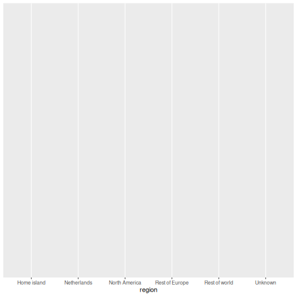
This gives us an empty canvas with axes. Now we add a geometry layer:
R
ggplot(data = squad, aes(x = region)) +
geom_bar()
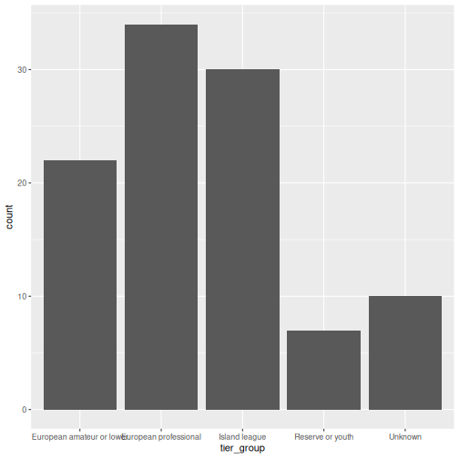
That is already a bar chart. The + operator is how you
add layers. Think of it as stacking transparencies on top of each
other.
The + operator vs the pipe
|>
The pipe |> passes data into a function. The
+ in ggplot2 adds layers to a plot. They look
similar but do different things. A common beginner mistake is using
|> where + is needed:
R
# WRONG, this will produce an error
ggplot(squad, aes(x = region)) |> geom_bar()
# CORRECT
ggplot(squad, aes(x = region)) + geom_bar()
Common chart types
Below is a reference table mapping SPSS Chart Builder chart types to their ggplot2 equivalents:
| Chart type | SPSS menu path | ggplot2 geometry |
|---|---|---|
| Bar chart | Graphs > Chart Builder > Bar |
geom_bar() / geom_col()
|
| Histogram | Graphs > Chart Builder > Histogram | geom_histogram() |
| Scatterplot | Graphs > Chart Builder > Scatter/Dot | geom_point() |
| Line chart | Graphs > Chart Builder > Line | geom_line() |
| Boxplot | Graphs > Chart Builder > Boxplot | geom_boxplot() |
Bar chart: geom_bar() and geom_col()
There are two bar chart geoms. Use geom_bar() when you
want R to count rows for you, and
geom_col() when you already have the values to
plot.
R
# geom_bar() counts the rows in each squad
ggplot(squad, aes(x = team_code)) +
geom_bar()
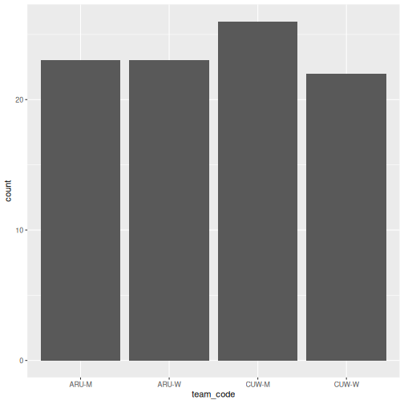
R
# geom_col() uses a pre-computed value on the y-axis
abroad <- squad |>
group_by(team_code) |>
summarise(pct_abroad = 100 * mean(!(club_country %in% c("CUW", "ABW", "X"))))
ggplot(abroad, aes(x = reorder(team_code, -pct_abroad), y = pct_abroad)) +
geom_col()
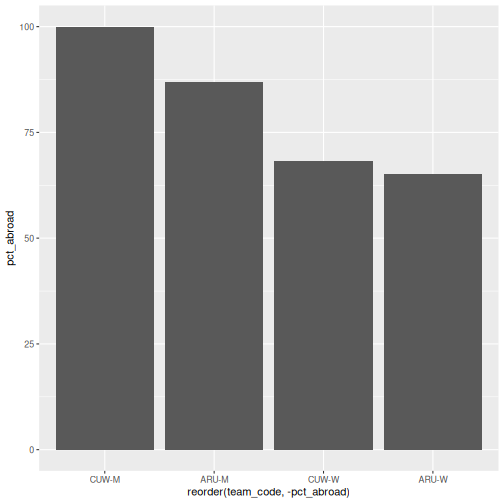
geom_bar() vs
geom_col(), when to use which
-
geom_bar()usesstat = "count"by default: it counts how many rows fall into each category. You only need anxaesthetic. -
geom_col()usesstat = "identity": it plots the actual value you supply. You need bothxandy.
In SPSS Chart Builder, when you drag a categorical variable to the
x-axis and a scale variable to the y-axis with Mean as the summary, that
is equivalent to first computing the mean with summarise()
and then using geom_col().
Stacked and filled bars
When you map a second categorical variable to fill, the
bars split. The position argument controls how:
R
ggplot(squad, aes(x = team_code, fill = region)) +
geom_bar()
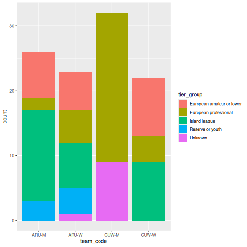
R
# position = "fill" converts to proportions, which is what you usually want
ggplot(squad, aes(x = team_code, fill = region)) +
geom_bar(position = "fill") +
scale_y_continuous(labels = scales::percent)
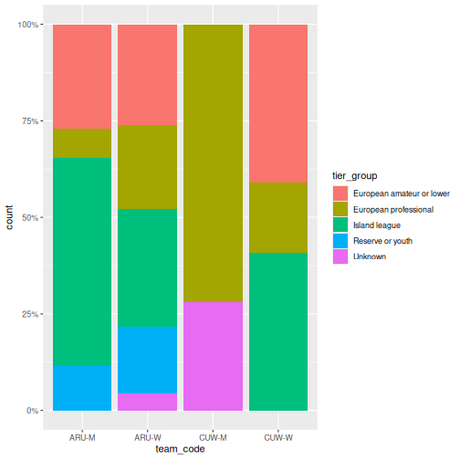
The second chart is the one that answers the question. Counts let squad size distort the comparison; proportions do not.
Histogram: geom_histogram()
In SPSS: Graphs > Chart Builder, drag a scale variable to the x-axis and select the Histogram type. Here we need a continuous variable, so we switch to the FIFA data:
R
ggplot(fifa, aes(x = points)) +
geom_histogram(binwidth = 50, color = "white")
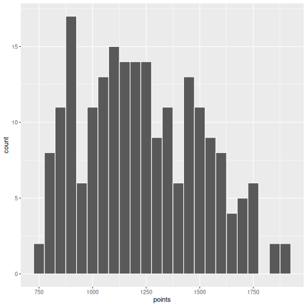
The binwidth argument controls how wide each bin is.
Experiment with different values to see how the shape of the
distribution changes.
Scatterplot: geom_point()
In SPSS: Graphs > Chart Builder, drag variables to x and y axes and select Simple Scatter.
R
ggplot(fifa, aes(x = log_population, y = points)) +
geom_point()
WARNING
Warning: Removed 4 rows containing missing values or values outside the scale range
(`geom_point()`).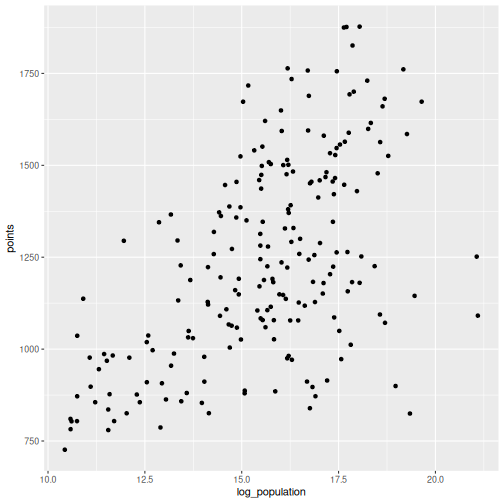
R will warn you that some rows were removed. That is the missing population data doing its job: ggplot2 refuses to plot a point it cannot place, and it tells you how many it dropped. Never suppress that warning without reading it first.
You can map additional variables to aesthetics like colour and size:
R
ggplot(fifa, aes(x = log_population, y = points, color = small_state)) +
geom_point(size = 2, alpha = 0.7)
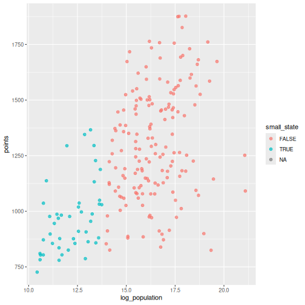
Drawing attention to specific cases
Often the point of a chart is one or two observations. Build a flag
column, then layer a second geom_point() and a text label
on top:
R
fifa_flag <- fifa |>
mutate(highlight = iso3 %in% c("CUW", "ABW"))
ggplot(fifa_flag, aes(x = log_population, y = points)) +
geom_point(color = "grey75", size = 2) +
geom_point(data = filter(fifa_flag, highlight), color = "#f38439", size = 3.5) +
geom_text(
data = filter(fifa_flag, highlight),
aes(label = country),
nudge_y = 60, size = 3.5
) +
labs(
title = "Two islands, one neighbourhood, very different rankings",
x = "Population (log scale)",
y = "FIFA points"
) +
theme_minimal(base_size = 13)
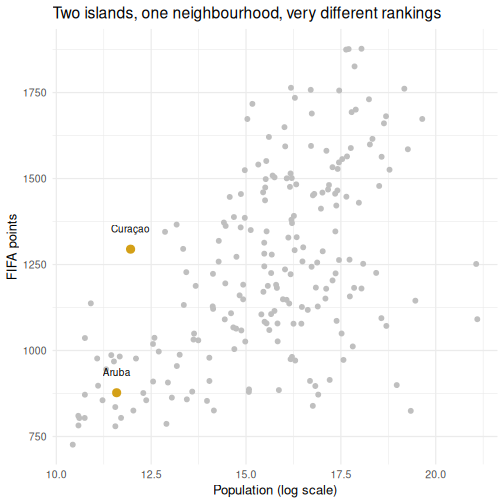
Layers are drawn in the order you write them, so the highlighted points sit on top of the grey ones. This is the single most useful pattern in this episode for report work.
Line chart: geom_line()
Line charts show trends over an ordered variable. Our two datasets are both cross-sections, so here we order countries by rank and trace the points curve:
R
top40 <- fifa |>
filter(rank <= 40) |>
arrange(rank)
ggplot(top40, aes(x = rank, y = points)) +
geom_line() +
geom_point(size = 1) +
labs(x = "FIFA rank", y = "FIFA points")
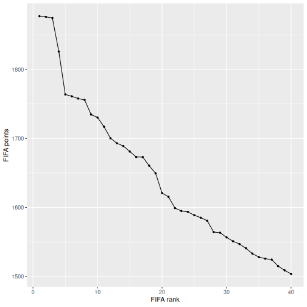
Boxplot: geom_boxplot()
In SPSS: Graphs > Chart Builder, select Boxplot and drag a grouping variable to the x-axis and a scale variable to the y-axis.
R
fifa |>
filter(!is.na(small_state)) |>
ggplot(aes(x = small_state, y = points)) +
geom_boxplot() +
labs(x = "Population under 1 million", y = "FIFA points")
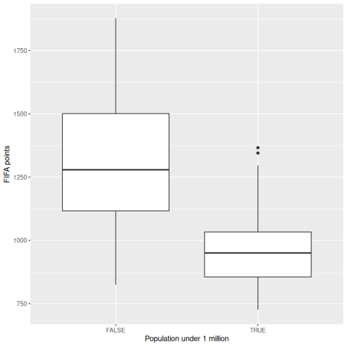
Making it publication-ready
So far our plots have been functional but plain. Let us take the squad composition chart through the full journey from basic to polished. This is where ggplot2 outshines SPSS Chart Builder: every tweak is a single line of code.
Step 1: Basic chart
R
p <- ggplot(squad, aes(x = team_code, fill = region)) +
geom_bar(position = "fill")
p
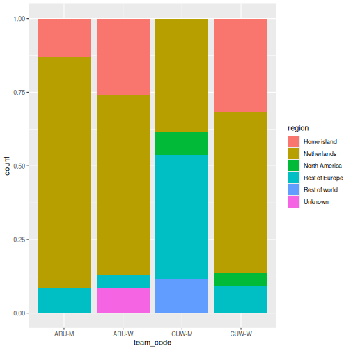
Step 2: Add labels
R
p <- p +
labs(
title = "Where the ABC islands' footballers actually play",
subtitle = "Share of each 2026 national squad by level of club football",
x = NULL,
y = NULL,
fill = NULL,
caption = "Source: Wikipedia national squad tables, August 2026"
)
p
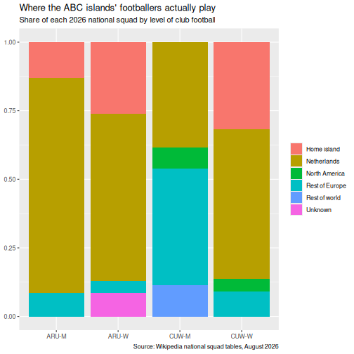
Step 3: Apply a clean theme
R
p <- p + theme_minimal(base_size = 13)
p
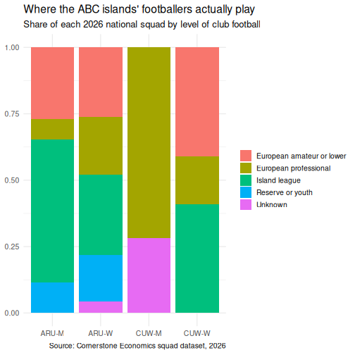
Step 4: Customize colours
Rather than accepting the default palette, set one deliberately. These are the LovelyData colours used across DCDC materials:
R
region_colours <- c(
"Netherlands" = "#44759e",
"Rest of Europe" = "#749c4c",
"North America" = "#8fb3d0",
"Rest of world" = "#dee3c8",
"Home island" = "#f38439",
"Unknown" = "#605b54"
)
p <- p + scale_fill_manual(values = region_colours)
p
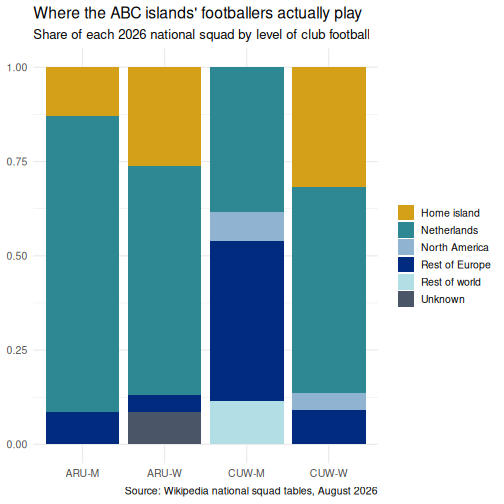
Step 5: Fine-tune text and formatting
R
p <- p +
scale_y_continuous(labels = scales::percent) +
theme(
plot.title = element_text(face = "bold"),
legend.position = "bottom",
panel.grid.major.x = element_blank()
)
p
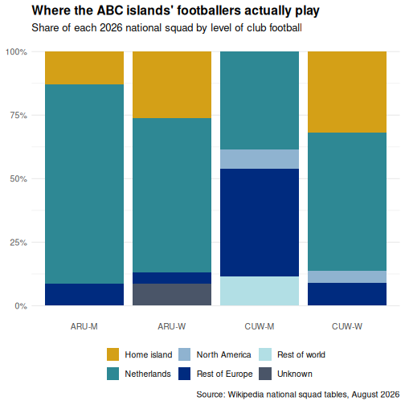
Saving your plot
Use ggsave() to export your plot as a PNG, PDF, or SVG
file:
R
ggsave("squad_composition.png", plot = p, width = 8, height = 5, dpi = 300)
In SPSS you right-click the chart and choose Export.
ggsave() gives you precise control over dimensions and
resolution, which is exactly what journals require.
Faceting: small multiples
Faceting is one of ggplot2’s most powerful features and something SPSS Chart Builder handles poorly. Instead of cramming all groups onto one chart, you split the data into panels, one per group.
R
squad |>
count(island, gender, region) |>
ggplot(aes(x = region, y = n, fill = region)) +
geom_col() +
facet_grid(gender ~ island) +
scale_fill_manual(values = region_colours) +
coord_flip() +
labs(
title = "Squad composition by island and gender",
x = NULL, y = "Players"
) +
theme_minimal(base_size = 12) +
theme(legend.position = "none")
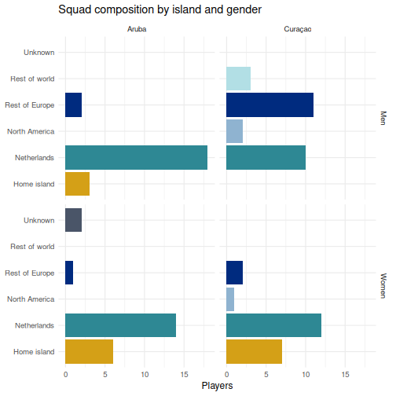
facet_grid(gender ~ island) lays out rows by gender and
columns by island, so you can read down a column to compare within an
island and across a row to compare between them.
facet_wrap() is the alternative when you have one grouping
variable and just want the panels to flow.
Challenge 1: Build a publication-quality highlighted scatterplot
Using the fifa data, create a scatterplot of
log_population (x-axis) against rank (y-axis)
with the following requirements:
- All countries in grey
- Curaçao, Aruba, Jamaica, and Suriname highlighted and labelled
- A linear trend line across all countries using
geom_smooth(method = "lm") - The y-axis reversed, so rank 1 is at the top where it belongs
- A proper title, axis labels, and caption, with
theme_minimal()and a bold title
R
focus <- c("CUW", "ABW", "JAM", "SUR")
fifa_c1 <- fifa |>
mutate(highlight = iso3 %in% focus)
ggplot(fifa_c1, aes(x = log_population, y = rank)) +
geom_point(color = "grey78", size = 2) +
geom_smooth(method = "lm", se = FALSE, color = "#605b54", linewidth = 0.7) +
geom_point(data = filter(fifa_c1, highlight), color = "#f38439", size = 3.5) +
geom_text(
data = filter(fifa_c1, highlight),
aes(label = country), nudge_y = -9, size = 3.4
) +
scale_y_reverse() +
labs(
title = "Population predicts FIFA rank, loosely",
subtitle = "Curaçao sits far above the line for its size; Aruba sits below it",
x = "Population (log scale)",
y = "FIFA rank",
caption = "Source: FIFA rankings and UN population estimates"
) +
theme_minimal(base_size = 12) +
theme(plot.title = element_text(face = "bold"))
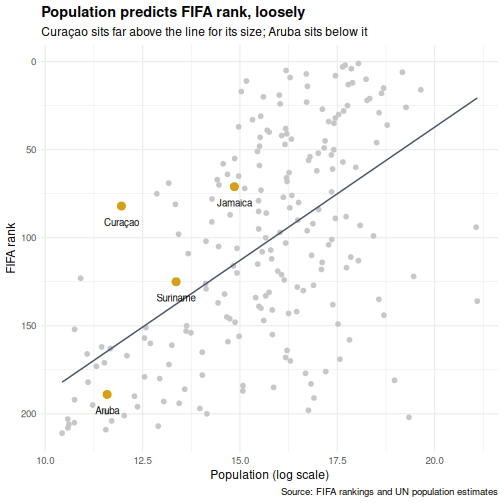
scale_y_reverse() matters more than it looks. Rank is a
variable where smaller is better, and a chart that puts rank 1 at the
bottom will be misread by half your audience.
Challenge 2: Recreate an SPSS-style chart
In SPSS a common chart is a clustered bar chart showing a summary by group. Create the R equivalent using the squad data: a clustered bar chart showing the percentage of each squad based abroad, with island on the x-axis and bars clustered by gender.
Hint: compute the percentage first with
group_by() and summarise(), then use
geom_col(position = "dodge").
R
squad |>
group_by(island, gender) |>
summarise(
pct_abroad = 100 * mean(!(club_country %in% c("CUW", "ABW", "X"))),
.groups = "drop"
) |>
ggplot(aes(x = island, y = pct_abroad, fill = gender)) +
geom_col(position = "dodge", width = 0.7) +
scale_fill_manual(values = c("Men" = "#44759e", "Women" = "#f38439")) +
labs(
title = "Share of each squad playing club football off-island",
x = NULL,
y = "Percent of squad",
fill = NULL
) +
theme_minimal(base_size = 12) +
theme(
plot.title = element_text(face = "bold"),
legend.position = "bottom"
)
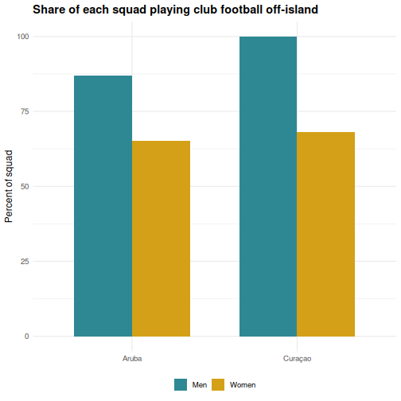
Look at the direction of the gender gap on each island. It does not point the same way on both, which is the kind of thing a single-number summary would have hidden from you.
- ggplot2 builds plots in layers: data, aesthetics, geometry, labels, theme
- Every SPSS Chart Builder chart has a ggplot2 equivalent that offers more control
-
position = "fill"turns counts into proportions, which is usually the honest comparison - Highlight specific cases by layering a second
geom_point()over a grey base - Faceting (
facet_wrap,facet_grid) creates small multiples, which SPSS Chart Builder handles poorly